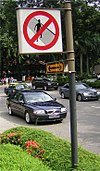

jaywalk

Definition: Jaywalking is the act of pedestrians walking in or crossing a roadway if that act contravenes traffic regulations. The term originated in the United States as a derivation of the phrase jay-drivers (the word jay meaning 'a greenhorn, or rube'), people who drove horse-drawn carriages and automobiles on the wrong side of the road, before taking its current meaning. Jaywalking was coined as the automobile arrived in the street in the context of the conflict between pedestrian and automobiles (also then known as horseless carriages), more specifically the nascent automobile industry.
Source: Wikipedia
Wikipedia Page (Something wrong with this association? Let us know.)
Wikidata Page (Something wrong with this association? Let us know.)